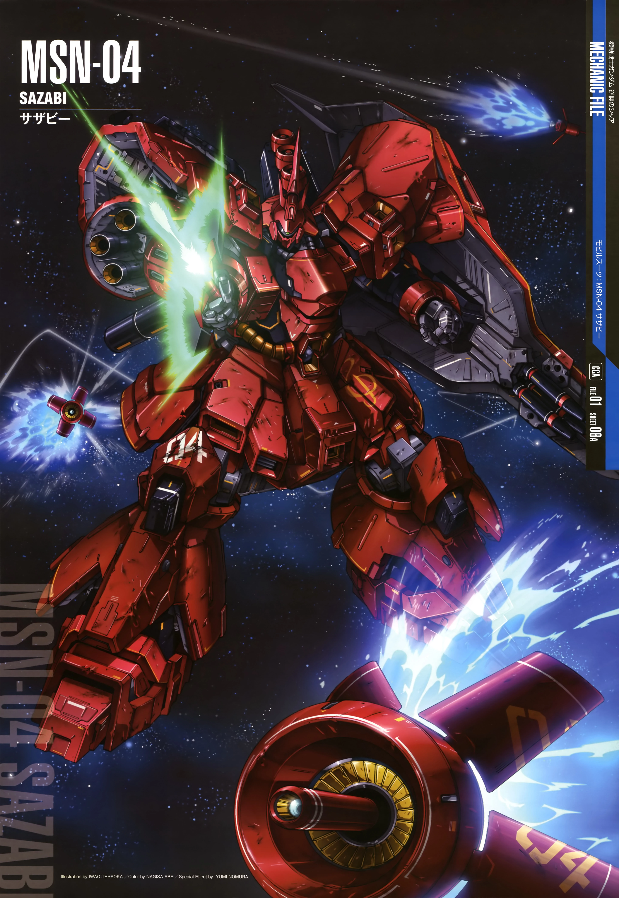

in the anime series Mobile Suit Gundam, there's a myriad of giant robots, called mobile suits, that people pilot

From Mobile Suit Gundam: Char's Counterattack, Char's very last mobile suit is the pinnacle of coolness. Painted in his signature red, the symbols painted on the suit, like the CD of "Casval Deikun" (Char's real name), show off how this suit was built specifically for Char. The smooth yet aggresive shape of the Sazabi further argue how this suit *is* Char.
And after the final fight between the Sazabi and Amuro Ray's Nu Gundam, who would argue against my love for this mech?